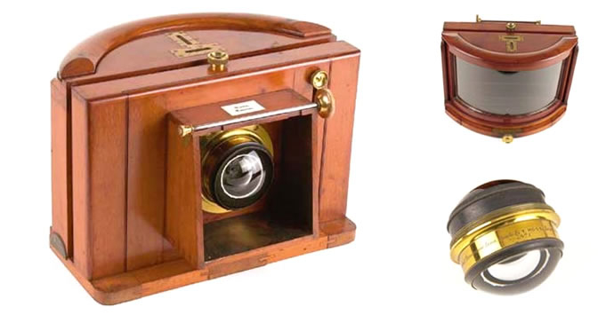
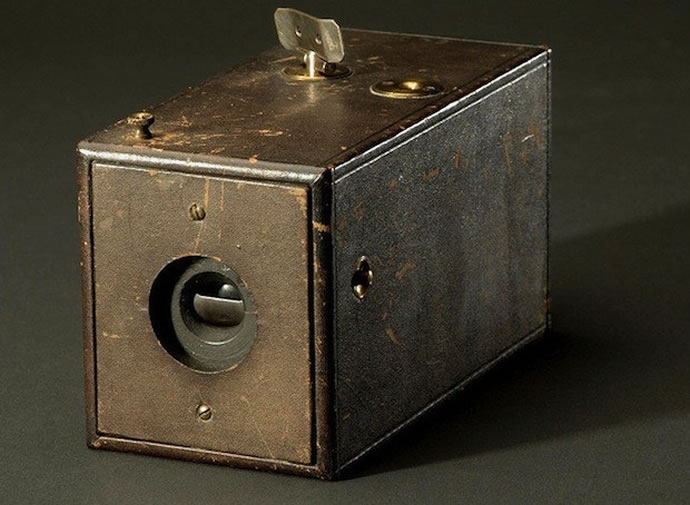
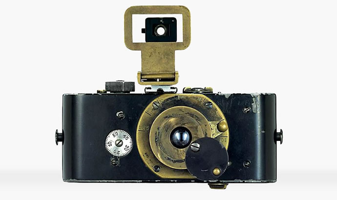

A evolução das cameras fotograficas

A primeira fotografia clicada data de 1826 de autoria do francês
Joseph Nicéphore Niépce. No entanto, não podemos chamá-lo de criador
da fotografia.
Pois, a criação da fotografia só foi possível devido a diversas
descobertas feitas por químicos e físicos, até a sua primeira
realização. Mas, isso é um assunto para um novo post. Agora vamos
traçar uma linha com a evolução das câmeras fotográficas do século XIX
aos dias de hoje.
As primeiras câmeras fotográficas
Daguerreótipos Percursor do cinema moderno, os Daguereótipos foram
antes de tudo uma colab entre Niépce e Louis Daguerre. Esta placa de
cobre revestida com prata e exposta ao vapor de iodo antes de ser
exposta à luz, foi em suma um marco para a fotografia. Para gravar a
imagem na placa, os primeiros daguerreótipos tiveram que ser expostos
à luz por até 15 minutos. Este método se tornou muito popular. Por
fim, sendo substituído apenas em 1850 pelas placas de emulsão.
Daguerreótipos
Percursor do cinema moderno, os Daguereótipos foram antes de tudo uma
colab entre Niépce e Louis Daguerre. Esta placa de cobre revestida com
prata e exposta ao vapor de iodo antes de ser exposta à luz, foi em
suma um marco para a fotografia. Para gravar a imagem na placa, os
primeiros daguerreótipos tiveram que ser expostos à luz por até 15
minutos. Este método se tornou muito popular. Por fim, sendo
substituído apenas em 1850 pelas placas de emulsão.
 1839, Daguerreótipo: o primeiro equipamento fotográfico criado em escala
comercial.
1839, Daguerreótipo: o primeiro equipamento fotográfico criado em escala
comercial.
Placas de Emulsão
As placas de emulsão ganharam espaço por serem mais baratas que os
Daguerreótipos assim como possuírem um tempo muito menor de exposição
para a gravação da imagem, que agora era de apenas 3 minutos. Também
nesta época, buscando a melhora do foco, adicionaram os foles às
câmeras foco. O menor tempo de exposição tornou as placas de emulsão
mais adequadas para a produção de retratos, que até então era a
fotografia mais realizada na época. Muitas fotos da guerra civil
americana foram produzidos com as placas úmidas. Estas placas úmidas
usavam um processo de emulsão chamado de processo de colódio. Dois
tipos comuns de placas de emulsão são o ambrótipo e o tipo estanho. Os
ambrótipos usavam uma placa de vidro em vvez da polaca de cobre dos
Daguerreótipos. Por outro lado os tipos de lata usavam as placas de
estanho.

1860, Sutton Panoramic: foi a primeira câmera a fazer fotos panorâmicas
através de uma lente grande angular, preenchida com água.
Câmeras fotográficas para todos
Anteriormente a fotografia era apenas para profissionais e os muito
ricos, até que George Eastman abriu uma empresa e a batizou de Kodak
na década de 1880. Foi então que Eastman criou um filme em rolo
flexível que não exigia mais a troca constante das placas sólidas.
Isso permitiu que ele desenvolvesse uma câmera box autônoma que
continha 100 exposições de filmes. A câmera tinha uma pequena lente
única sem ajuste de foco.

1888, Kodak nº 1: primeira câmera a utilizar filme de rolo, destinada ao
fotógrafo amador
O consumidor após tirar as fotos envia a câmera de volta para a
fábrica para que o filme seja revelado e as impressões sejam feitas,
da mesma forma que as modernas câmeras descartáveis dos anos 1980.
Esta foi a primeira câmera barata o suficiente para uma pessoa comum.
O filme ainda era grande em comparação com o filme de 35 mm de hoje.
Foi só depois, no final da década de 1940 que o filme de 35 mm se
tornou barato o suficiente para ser usado pela maioria dos
consumidores.
Retratos da Guerra
Foi por volta de 1930 que Henri-Cartier Bresson e outros fotógrafos
usaram câmeras com filmes de 35mm para captar os momentos cotidianos,
ao invés dos retratos encenados.

1913, Ur-Leica: primeiro protótipo de câmera 35 milímetros, projetada
por Oskar Barnack.
Após o início da primeira Guerra Mundial, muitos fotógrafos então
também adotaram este estilo, que foi chamado de fotojornalismo. Os
retratos dos soldados da primeira Guerra Mundial deram lugar às
imagens gráficas e realistas da Segunda Guerra e suas consequências.
Registratrando os horrores da guerra e ajudando a contar a história
com imagens. Além disso moldando a cara da fotografia para sempre.
A mágica dos instantâneos
Ao passo em que as câmeras de filmes 35mm setornaram populares. a
Polaroid lançou o modelo 95. Este modelo usava um processo químico
secreto para revelar o filme diretamente na câmera. E em menos de um
minuto!